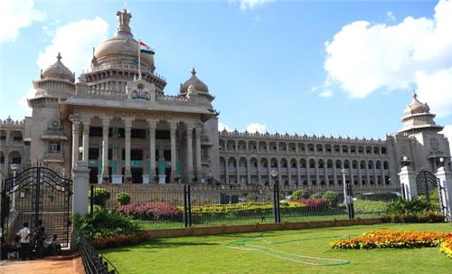
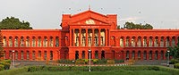

 
The administrative body of Bangalore is which is responsible
BBMP
for all the governance in the city.It represents the third level of governance in city first and second are Central and state Government respectively.
BBMP is run by a city council of members,including 198 corporators representing each of the wards of the city and 52 other elected representatives,
consisting of members of Parliament and the state legislature. Elections to the council are held once every five years and are decided by popular vote.
Members contesting elections to the council usually represent one or more of the state's political parties.A mayor and deputy mayor are also elected from
the elected members of the council.Elections to the BBMP were held on 28 March 2010, after a gap of three and a half years since the expiry of the
previous elected body's term, and the Bharatiya Janata Party was voted into power – the first time it had ever won a civic poll in the city.
Indian National Congress councillor Sampath Raj became the city's mayor in September 2017; the vote was boycotted by the BJP.In September 2018,
Indian National Congress councillor Gangambike Mallikarjun was elected as mayor,replacing Sampath Raj.